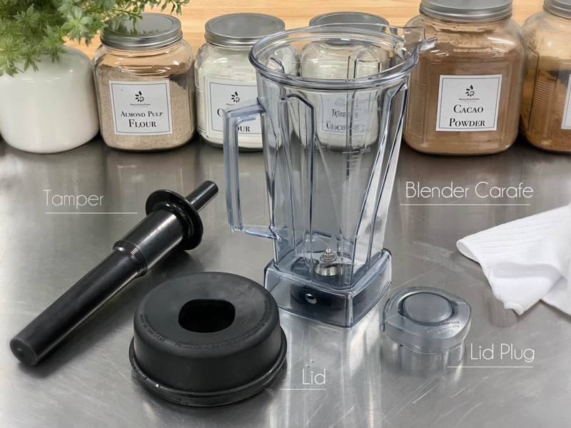
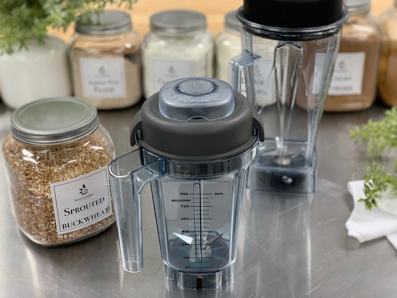
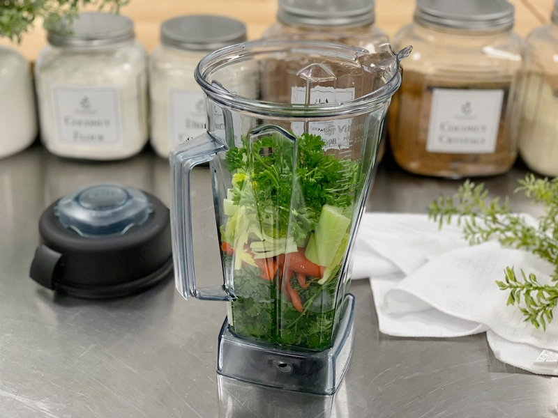
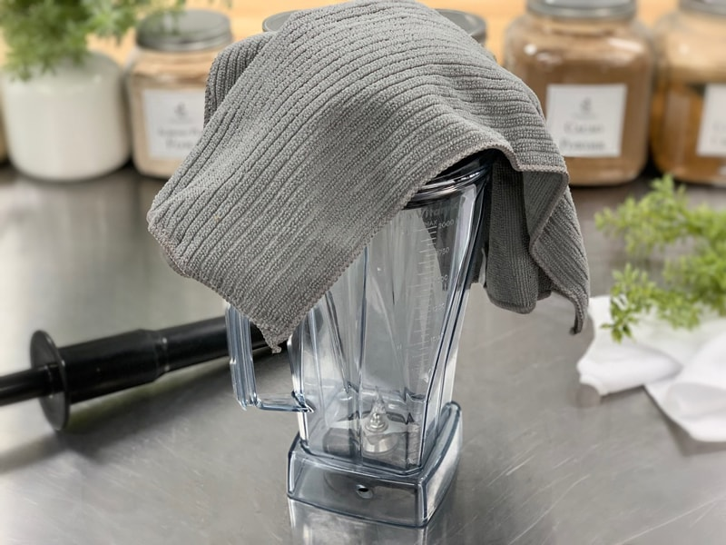
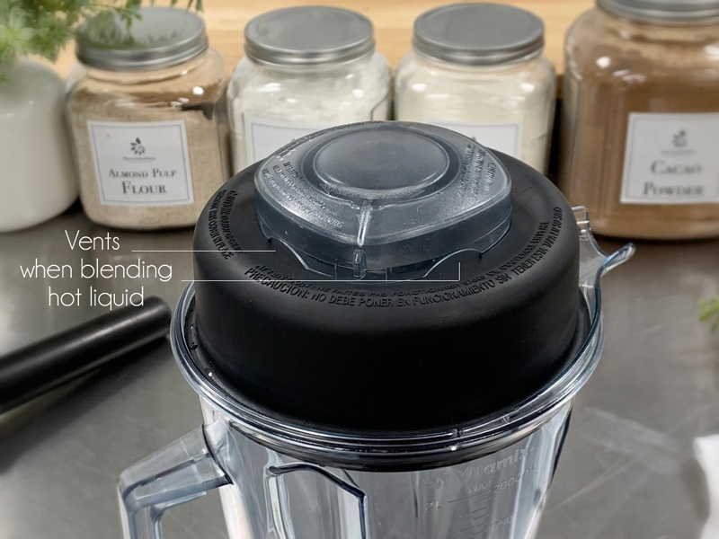
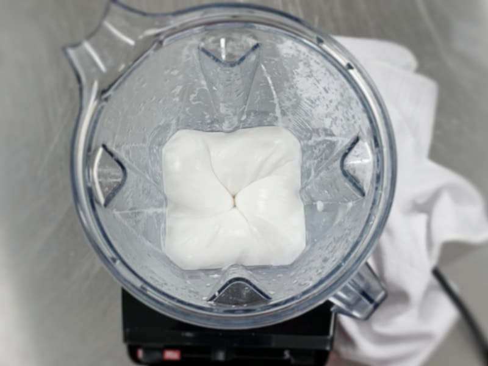

# 2 Blender Tips and Tricks
A blender is one of the most essential and versatile appliances you can own as a raw vegan. It is a tool that you are going to be regularly using to do a job, and the higher the quality tool you have, the better the result you’re going to achieve. They are great for creating sauces, hummus, puddings, soups, nut milks, blended beverages, dips, and so forth. I went more in-depth (here) as to why I feel a high-powered blender is crucial to have. In this post, I am going to share some quick tips and tricks that you can use so you can get the most out of your blender.
Truth be told, our blender is one of the most used appliances in our house. It gets used two to four times a day. It is one of those kitchen tools that I will even pack when traveling. “Socks? Check, Skibbies? Check, Extra shirts? Check, Blender? CHECK!” Laugh it up. :) Your day is coming!
Get to Know Your Blender
I won’t go through each item listed in the photo below… it’s pretty self-explanatory, but I do want you to familiarize yourself with what the parts are called, so you will know what I am referring to in the future. If you own a different make and model, be sure to read through the owner’s manual. Boring, I know. BUT it’s amazing the tips and tricks you can learn, which will optimize the blender’s purpose.

Cleaning
Normal Cleaning:
- Fill the container half full with warm water and add a couple of drops of liquid dishwashing detergent to the container.
- Snap or push the complete 2-part lid into a locked position.
- Select variable speed 1. Turn the machine on and slowly increase speed to variable speed 10, then to High. Run on high-speed for 30 to 60 seconds.
- Turn off the machine and rinse and drain the container.
To Sanitize:
- Follow Normal Cleaning instructions above.
- Fill the container half full with water and 1 1/2 teaspoons of liquid bleach.
- Snap or push the complete 2-part lid into a locked position.
- Select variable speed 1. Turn the machine on and slowly increase speed to variable speed 10, then to High. Run on high-speed for 30 to 60 seconds.
- Turn off the machine, and allow the mixture to stand in the container for an additional 1 1/2 minutes.
- Pour the bleach mixture out. Allow the container to air dry.
- Do not rinse after sanitizing.
Fun Tip!
- If you are blending anything sweet in the carafe, let’s say a raw frosting, for example, after scraping the batter out, add a cup of raw almond milk to the carafe and blend on high for 30 seconds. Not only will it help “clean” the blender, but it will also make for a delicious sweetened almond milk reward for all your hard work!

Use the Correct Container
- In the photo above, the full-size blender carafe in the far right back is used for wet ingredients. The smaller jar in the front of the picture is the one used for grinding down dry ingredients.
- Use the wet-blade container for wet ingredients, the dry-blade container for dry ingredients, and the massive (standard) container for bigger batches. The different styles of blades have a different impact on your ingredients!
- If you want to use your Vitamix like a food processor, go with the smaller wet-blade container. It’s a little wider, so it’s easier to “process” compared to the taller standard container, which is better for smoothies and soups.
Use the Tamper
- The left photo shows you what the tamper looks like when being used in the blender carafe. In the picture to the right, I am showing you that when you add the tamper correctly, it doesn’t touch the blades. I am demonstrating this because many people are nervous about using the tamper, fearing it will touch the blades.
- If your blender comes with a tamper, use it. It helps to push ingredients down into the blades, which will help speed things up. Not all blenders come with them, so don’t sweat it if it doesn’t.
- Place the black lid on top of the carafe and remove the center lid plug to use the tamper. The lid prevents the tamper from hitting the blades.
- The container should not be more than two-thirds full when the tamper is used during blending.
- Do not use the tamper for more than thirty consecutive seconds (to avoid overheating).
- Holding the tamper straight down may not always help the ingredients circulate. If need be, point the tamper toward the side or corner of the container.

Layering Ingredients
Proper layering of ingredients is essential to get the best blend from a Vitamix. It is always best to put any liquid into the blender before other ingredients. By layering with liquid first, the blades can move easier, which helps the machine draw all ingredients downward. Here is the proper order from bottom to top:
- Liquid ingredients
- Soft, lightweight, or small ingredients
- Hard, heavier, or large ingredients
- Frozen items
- Add water or broth to lift ingredients off the Vitamix blades and to allow them to blend more evenly without clogging or clumping.

Blending Hot Liquids
- When blending hot liquids or ingredients, use caution; spray or escaping steam may cause scalding and burns. I like to loosely lay a kitchen towel over the lid while blending hot liquids, making sure not to hold it down tight, and block the steam release holes.
- Do not blend hot liquids if your blender doesn’t have a lid to allow steam to escape while blending; this can cause the lid to explode off and hot liquid to splatter.
- Do not fill the container past the maximum capacity.
- When making nut butter or oil-based foods, do not process for more than one minute after the mixture starts to circulate in the container. Processing for more extended periods can cause dangerous overheating.
- In the photo below, I am pointing out the vent holes that are in the lid assembly. These vents help air, especially HOT air, to escape while blending so that the lid doesn’t explode off while in use. Never plug these holes. If plugged, the hot air will cause the lid to pop off, and hot liquid can spray out. I know I am repeating this, but safety first!

Turning it On
- Activate the machine by setting the On/Off Switch to On, then slowly increase to the desired speed.
- Always start your machine on variable speed one and work your way up before hitting the high-speed button.
- Due to the machine’s speed, processing times are much quicker than standard appliances.
- After turning the machine off, wait until the blades completely stop before removing the lid or container from the motor base.

Creating a Vortex
- What is a vortex? Look into the container from the top and slowly increase the speed from low to high, the batter will form a small vortex (or hole) in the center. High-powered machines have containers that are designed to create a controlled vortex, systematically folding ingredients back to the blades for smoother blends and faster processing, instead of just spinning ingredients around, hoping they find their way to the blades.
- If your machine isn’t powerful enough or built to do this, you may need to stop the unit often to scrape the sides down.
© AmieSue.com